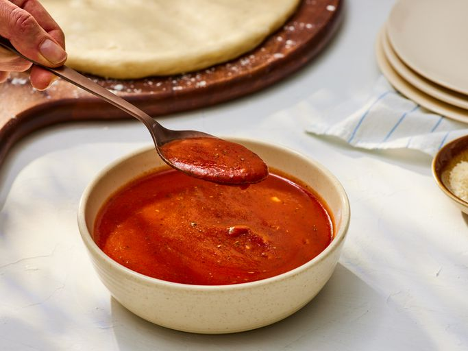

Easy Homemade Pizza Sauce

Description
This pizza sauce recipe is easy to make with tomato paste, olive oil, garlic, and herbs. No cooking is required,
and it tastes delicious — just like you'd get at a pizzeria!
Ingrediends
- 1 cup water, or as needed
- 1 (6 ounce) can tomato paste
- 1/3 cup extra virgin olive oil
- 2 cloves garlic, minced
- 1/2 tablespoon dried oregano
- 1/2 tablespoon dried basil
- 1/2 teaspoon dried rosemary, crushed
- salt and ground black pepper to taste
Steps
- Gather all ingredients.
- Mix together water, tomato paste, and olive oil in a large bowl or jar. Add garlic, oregano, basil,
rosemary, salt, and pepper; mix well.
- For best results, let sauce stand for several hours to allow the flavors to blend. No cooking is necessary;
just spread on pizza crust.
HOME